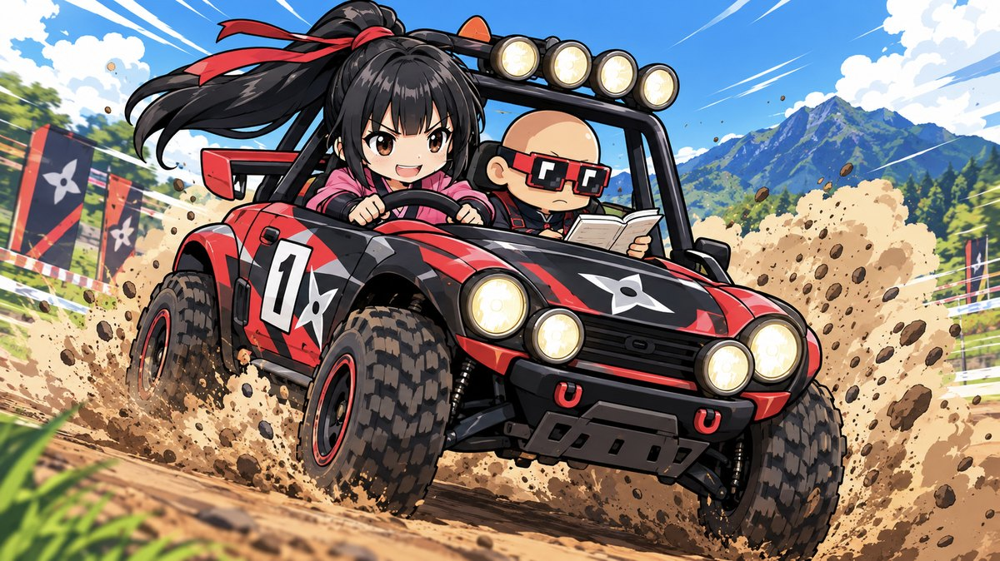
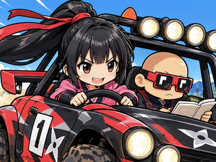

SakuyaNounRally
迷路に散らばった CNP 11体を全部回収し、出口へ戻れ。
通った跡は得点になる。
車は止まらない ― 決められるのは曲がる方向だけ。
赤い敵車に触れるとクラッシュ。車は3台まで。
SMOKE でスピンさせられるが、燃料を多く食う。燃料が尽きると減速し、やがて力尽きる。
横向きにしてください
本作は CryptoNinja / CryptoNinja Partners の非公式ファンアートです
CNP11体を集めて、出口へ戻れ。通った跡が得点。
車は止まらない ― 曲がる方向だけ決める。
壁に当たると自動で右へ。行き止まりだけ跳ね返る。
赤い車に触れるとクラッシュ。車は3台。
SMOKE で敵はスピン。ただし燃料を多く食う。
燃料が尽きると減速し、8秒で力尽きる。
スマホ: 画面を押したまま倒す
PC: 矢印/WASD ・ Space=煙 ・ M=音 ・ P=一時停止

TOP10入り！ 名前を登録してください